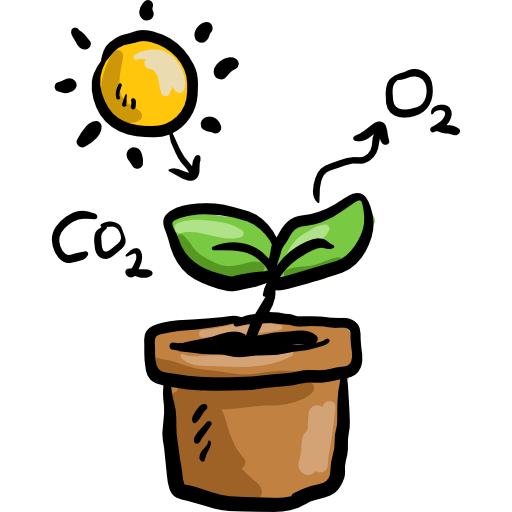

Chemistry Of Life
-
Life is based on carbon; organic molecules include carbohydrates,
lipids, proteins, and nucleic acids.
-
Water's polarity allows for hydrogen bonding, giving it unique
properties like cohesion, adhesion, and high specific heat.
-
Monomers form polymers via dehydration synthesis and are broken
down by hydrolysis.
-
Proteins are made of amino acids and have four levels of
structure; shape determines function.
-
Nucleic acids store genetic info (DNA, RNA); ATP is the energy
currency of the cell.
Cell Structure and Function
-
Prokaryotes lack membrane-bound organelles; eukaryotes have
nuclei, mitochondria, ER, etc.
-
Ribosomes synthesize proteins; rough ER modifies them; smooth ER
synthesizes lipids; Golgi packages.
-
Mitochondria produce ATP through cellular respiration;
chloroplasts perform photosynthesis.
-
Cell membranes are selectively permeable; phospholipid bilayer
with embedded proteins.
-
Surface area-to-volume ratio affects cell efficiency; smaller
cells are more efficient.
Cellular Energetics

-
Enzymes lower activation energy and speed up reactions; they're
affected by temperature, pH, and inhibitors.
-
Photosynthesis converts solar energy to chemical energy
(light-dependent and Calvin cycle stages).
-
Cellular respiration includes glycolysis, Krebs cycle, and
oxidative phosphorylation to make ATP.
-
Fermentation produces ATP anaerobically but less efficiently than
aerobic respiration.
-
Chemiosmosis and electron transport chains are vital for ATP
synthesis in both mitochondria and chloroplasts.
Cell Communication and Cell Cycle
-
Cells communicate via chemical signals (autocrine, paracrine,
endocrine, and juxtacrine).
-
Signal transduction pathways involve reception, transduction, and
response; often involve second messengers.
-
Feedback mechanisms regulate homeostasis (positive amplifies,
negative stabilizes).
-
The cell cycle includes interphase (G1, S, G2) and mitosis (PMAT);
checkpoints control progression.
-
Cancer results from uncontrolled cell division due to failed
checkpoints and mutations.
Heredity
-
Mendel's laws: segregation (alleles separate) and independent
assortment (genes assort independently).
-
Genotype determines phenotype; dominant vs. recessive alleles.
-
Use Punnett squares to predict inheritance patterns (monohybrid,
dihybrid, sex-linked).
-
Non-Mendelian inheritance includes incomplete dominance,
codominance, and polygenic traits.
-
Linked genes and recombination frequency help map gene locations
on chromosomes.
Gene Expression and Regulation
-
DNA replication is semi-conservative and occurs in the 5' to 3'
direction.
-
Transcription makes mRNA from DNA; translation uses mRNA to build
proteins at ribosomes.
-
Gene expression is regulated by transcription factors and operons
(like the lac operon).
-
Mutations include point mutations, frameshifts, deletions, or
substitutions, which can affect protein function.
-
Biotechnology tools, such as gel electrophoresis, are used to make
out lives easier.
Natural Selection
-
Evolution is driven by natural selection, genetic drift, gene
flow, and mutations.
- Fitness is an organism's ability to survive and reproduce.
-
Evidence of evolution includes fossils molecular data, and
comparative anatomy.
-
The Hardy-Weinberg equation can be used to calculate the genetic
variation of a population at equilibrium.
-
Speciation occurs through reproductive isolation and can be
allopatric or sympatric.
Ecology
-
Ecosystems include biotic and abiotic components; energy flows,
nutrients cycle.
-
Food chains and webs show energy transfer; 10% rule limits trophic
levels.
-
Population dynamics depend on birth/death rates,
immigration/emigration, and carrying capacity.
-
Interactions include competition, predation, mutualism,
commensalism, and parasitism.
-
Human impact includes climate change, habitat loss, invasive
species, and pollution.